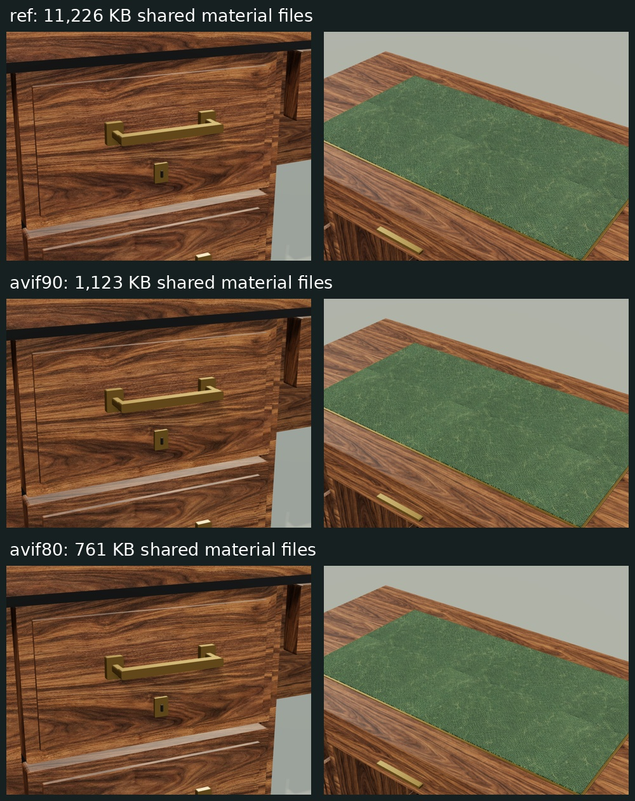
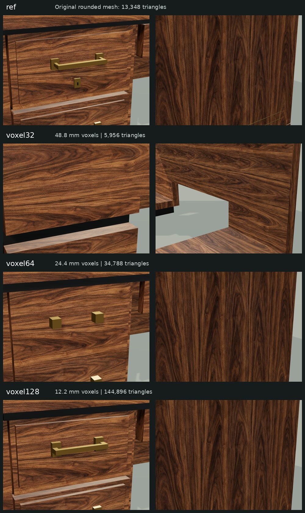
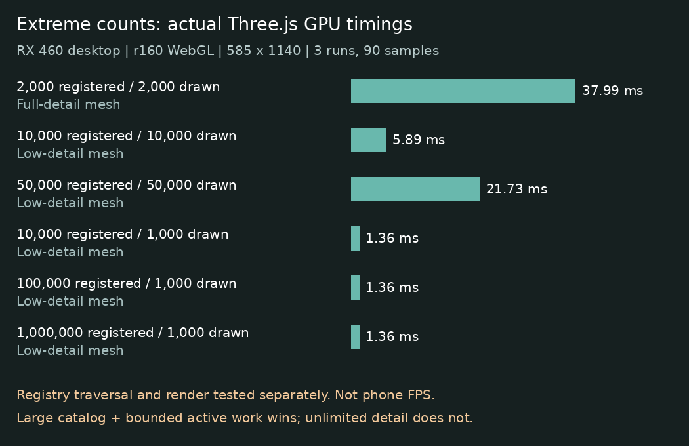

High-quality 3D, tested on your phone
Compare shared materials and extreme object counts in Three.js. Drag the desk to inspect it, or run the automatic test. Keep this tab visible while it runs.
Loading the first textured desk…
No account, tracking, or automatic upload. Results stay on this device until you choose to share them. This measures your actual browser; it does not simulate a slow connection.
Your results
| Test | Frames p50 / p95 | Render CPU p95 | GPU p95 |
|---|
Raw results / copy fallback
What the test measures
First textured frame, material preparation and first GPU completion, real animation-frame p50/p95/p99, main-thread render submission, GPU timestamps where available, and texture mip-data size. Texture bytes are not a driver VRAM measurement. The automatic run also compares display pixel ratios 1 and 2.
Repeated objects share geometry and materials. Counts are not independent unique assets. Large catalogs and visible objects are different quantities. Stress tests stop increasing load when earlier frame times are poor; a Stop button cannot cancel a GPU command already in flight.
First visit and repeat visits have different HTTP-cache conditions. The result records resource timings and whether a prior visit was saved. A hidden tab, context loss, or a prolonged frame stops the run. Tests use a direct WebGL renderer without shadows; this is a controlled fixture, not the complete HE engine.
Desktop close-up comparisons and research



Desktop findings and limitations · Alternative representations and existing HE optimizations